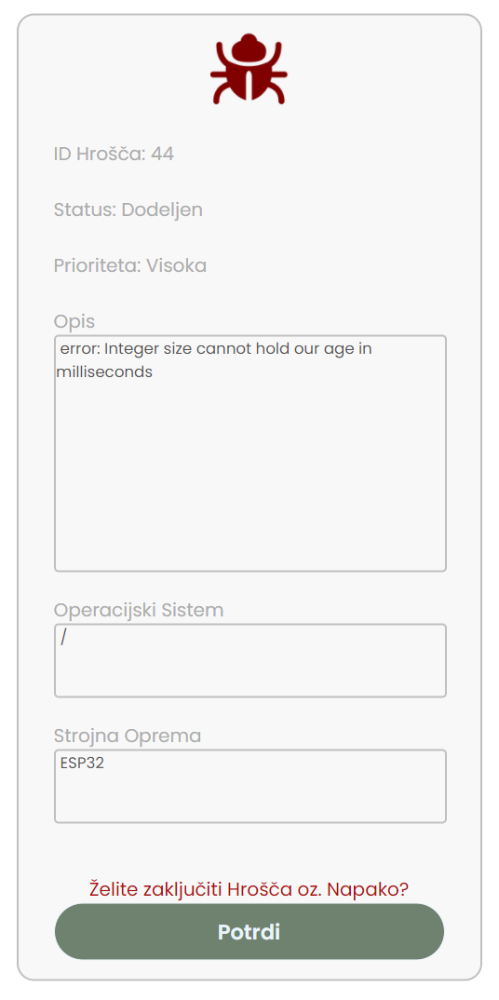
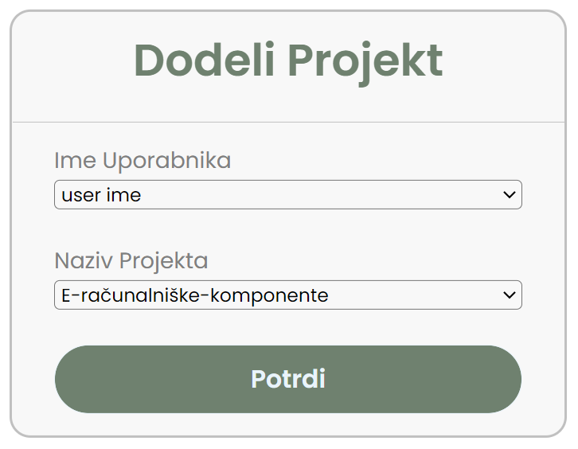
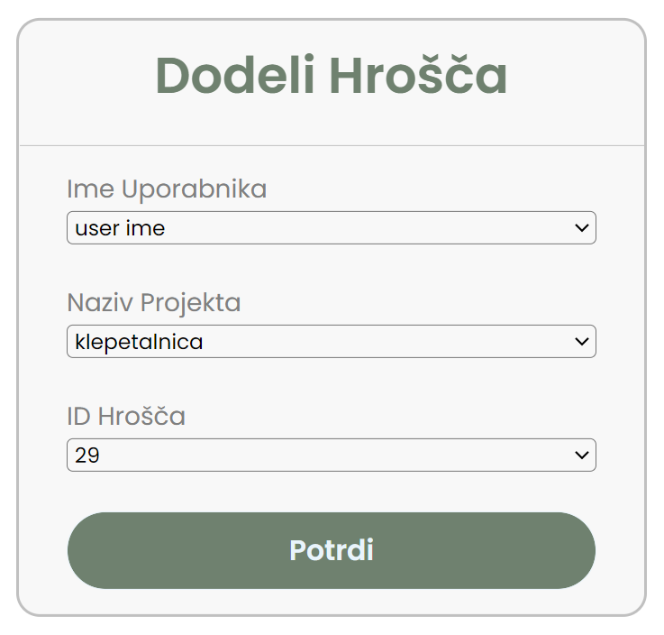

BugTrack je enostaven sistem namenjen beleženju nastalih Napak oziroma Hroščev v postopku razvoja programske opreme.
Admin uporabniku pripiše projekte in dodeli napake. Napake, ki v procesu razvoja programskega projekta nastanejo se razporedijo med uporabnike.
Od Uporabnika se pričakuje, da zavezane hrošče v okviru projekta na katerem dela odpravi. Ko programsko napako odpravi jo v okviru sistema zakjuči.
S ustrezno uporabo sistema se ohranja nadzor nad še aktivnimi in že odpravljenimi napakami posameznega projekta.
S tem se vrjetnost pojava neodpravljenih napak v končnem izdelku zmanjša.
Uporabniku sistema so omogočene sledeče funkcionalnosti
Uporabnik mora ob prijavi napake podati sleče podatke
Uporabnik lahko zaključi vse nanj zavezane napake, ki še niso bile zaključene. Sistem preprečuje nenamerno zaključitev napake s tem da uporabnika pred potrditvijo zaključitve opozori.
Uporabnik ima možnost filtriranja hroščov glede na njivo stanje.
Omogočen ima vpogled v seznam že zaklučenih napak ter v seznam še aktivnih napak.
Z izbiro filtra se ustrezne napake prikažejo v obliki tabele. S klikom na posamezno napako se odpre informacijska stran, ki podaja Specifikacije Hrošča.

Uporabnik ima možnost vpogleda v vse projekte na katere je zavezan. S klikom na posamezen projekt se odpre seznam vseh napak projekta, s ponovnim klikom na posamezno napako se odpre informacijska stran ki podaja Specifikacije Hrošča.
Adminu sta omogočene dve glavni funkcionalnosti in sicer dodelitev projekta in dodelitev programske napake.
Admin mora podati ime uporabnika in naziv projekta katerega želi na uporabnika zavezati.
Sistem omogoča da na posameznem programskem projektu dela več uporabnikov. Vnos podatkov je enostaven saj
sistem filtrira vse uporabnike in projekte ki so trenutno v podatkovni bazi.
Primer:
Admin je iz seznama ime Uporabnika izbral uporabnika z imenom "test", v seznamu Naziv projekta pa projekt z nazivom "project".
Torej Admin lahko uporabnika "test" zaveze na projekt "project".

Admin mora podati ime uporabnika na katerega želi zavezati programsko napako. Sistem avtomatsko filtrira vse projekte na katere je izbrani
uporabnik zavezan. Admin izbere specifičen projekt v katerem se nahaja programska napaka. Sistem ponovno filtrira vse napake, ki so v okviru projekta
še aktivne.
Primer:
Uporabnik "marjaz" je zavezan na projekt z nazivom "project", v projektu je aktiven še en hrošč z ID številko "14".
Admin lahko uporabnika "matjaz" torej zaveže na hrošča z ID številko "14". Če v okviru projekta "project" nebi bilo nobenega aktivnega hrošča bi bil seznam ID Hrošča prazen!
